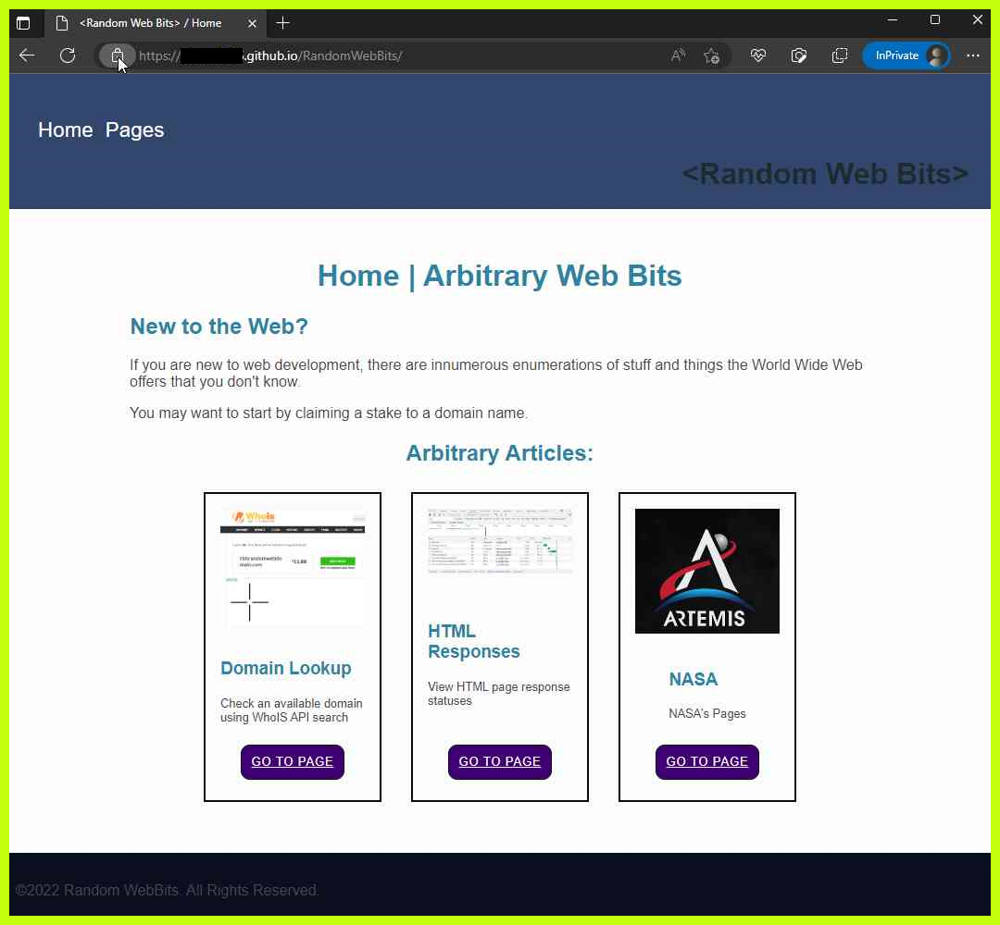
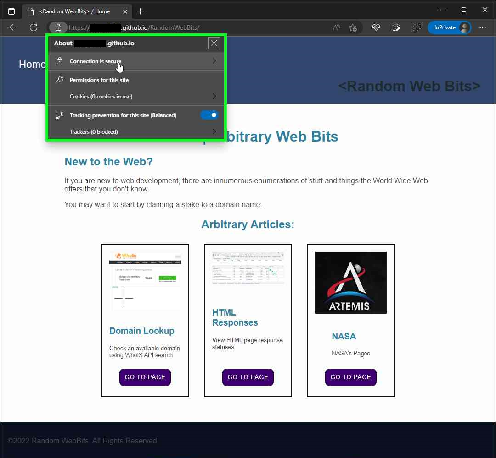
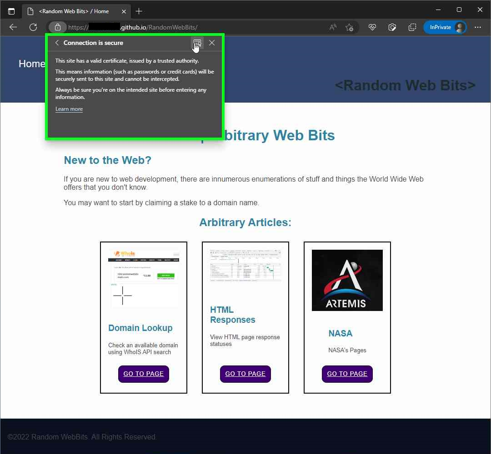

TRY: Viewing the HTTPS certificate
Hypertext transfer protcol secure, or HTTPS, keeps data encrypted over the internet; this helps to keep personal data and sensitive data away from prying eyes and inter-webs robots.
Open the certificate details pane:
Step 1: Click the icon by the URL bar View site information
View site informationURL buttom

Step 2: In Edge browser, left click the "Connection is secure" button
Connection is securebutton

Step 3: Click to open the HTTPS certificate details panel.
Show certificatebutton
